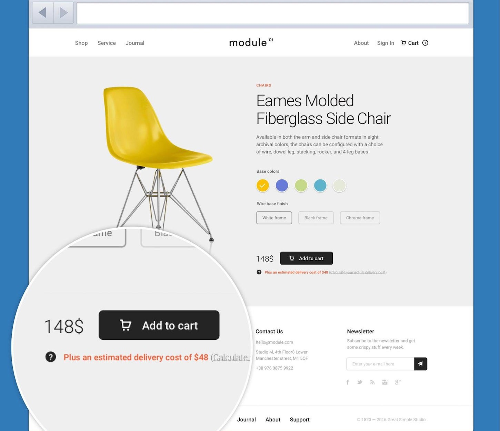
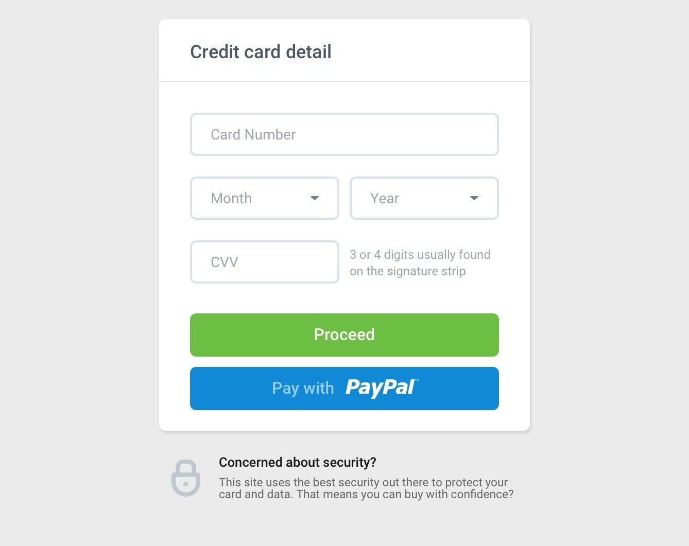

Why Customers Abandon Their Carts And What To Do About It

Selling products or services in your Shopify store means you will unfortunately experience customers abandoning their carts even after they’ve put items in the cart. Cart abandonment causes online retailers a fair amount of pain and it’s ubiquitous amount sellers. Let’s explore some of the reasons why customers abandon carts and what you can do.
Forcing customers to make an account is one reason that customers choose not to continue checking out. This causes them more entry work just when they really want to just pay and go. Think about whether you want to require accounts from customers or not. You can choose to make it an option rather than a requirement. If you want to encourage account creation, offering an incentive to sign up helps. Offering a discount or some value that needs an account, such as order tracking, will encourage customers to create an account. Yet, you can still leave account creation as an option, thus allowing people in a hurry to not abandon their cart.
Another big cause of abandoned carts is unexpected delivery costs. If the customer is only seeing the product cost before shopping and taxes, they may be unpleasantly surprised at seeing the grand total. One way to alleviate this is by offering free shipping. Depending on the amount of competitive flexibility you have with your pricing your product, you may be able to modestly increase your prices to account for the additional costs incurred by offering free shipping. You can offer free shipping for certain order minimums instead.

Alternatively, you can ameliorate unexpected delivery costs pushing customers to abandon their carts is by providing a delivery rate calculator earlier on. This can be customized on each product’s page based on the item’s weight. I can do this customization for you. The customization would calculate an estimated shipping cost based on the weight of each specific item. You may provide language stating that this is an estimated cost, so you need not be too worried about the actual cost varying a little.
Brand uncertainty may hamper certain customers from completing their order with you. Some shoppers put items in the cart, but then have second thoughts when it’s time to part with their money. Building a customers’ confidence and trust encourages the customer to get over their hesitation. Testimonials are a great means to build such trust. You may add customers’ glowing reviews on your homepage. Another approach is to provide a means for customers to enter product reviews while showing past reviews on each product page. Customer reviews of your store and/or each product really helps get customer from cart to full checkout.

Payment security concerns is another uncertainty that the customer may harbor. Some customers aren’t sure if they can trust every site to handle their payment information securely. How then do you engender the customer’s confidence in the security? Some ecommerce sites indicate payment security by clearly communicating that their store has security technology.
Abandoned carts is a rather nuanced issue and there are further reasons customers abandon their carts during the checkout process. However, we addressed some of the big reasons that this occurs. Consider what you would like to do to improve your abandoned cart statistic. Often a small padlock image and a message about security is enough to reassure users.